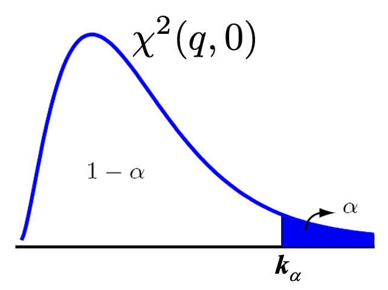

9.2. Table: Central Chi-Squared Distribution#
The table shows one-sided (right-hand) probabilities \(\alpha\) as function of the critical value \(k_\alpha\) and the degrees of freedom, \(q\), i.e. \(\alpha = P(X\geq k_\alpha)\) for \(\chi^2(q,0)\).

To evaluate the table for \(k_\alpha\): find the value of \(q\) in the first column, then the column for \(\alpha\) in the first row.
Example: \(\alpha\) = 0.0100 and \(q\) = 10 yield \(k_\alpha\) = 23.2093.
from scipy.stats import chi2
The cell below is set up to use interactively. To use it, click –> Live Code on the top right corner of this screen and then wait until Python interaction is ready. The method scipy.stats.chi2 has already been imported as chi2.
alpha = 0.0100
q = 10
k_alpha = chi2.ppf(1 - alpha, q)
print(f"For alpha = {alpha:.4f} and q = {q} degrees of freedom, k_alpha = {k_alpha:0.4f}, ")
print(f"The probability in the upper (right-hand) tail is {100*alpha:.1f}%.")
For alpha = 0.0100 and q = 10 degrees of freedom, k_alpha = 23.2093,
The probability in the upper (right-hand) tail is 1.0%.
Table of Values#
\(\alpha\) |
0.9990 |
0.9950 |
0.9900 |
0.9750 |
0.9500 |
0.9000 |
0.1000 |
0.0500 |
0.0250 |
0.0100 |
0.0050 |
0.0010 |
|---|---|---|---|---|---|---|---|---|---|---|---|---|
\(q\) |
||||||||||||
1 |
0.0000 |
0.0000 |
0.0002 |
0.0010 |
0.0039 |
0.0158 |
2.7055 |
3.8415 |
5.0239 |
6.6349 |
7.8794 |
10.8276 |
2 |
0.0020 |
0.0100 |
0.0201 |
0.0506 |
0.1026 |
0.2107 |
4.6052 |
5.9915 |
7.3778 |
9.2103 |
10.5966 |
13.8155 |
3 |
0.0243 |
0.0717 |
0.1148 |
0.2158 |
0.3518 |
0.5844 |
6.2514 |
7.8147 |
9.3484 |
11.3449 |
12.8382 |
16.2662 |
4 |
0.0908 |
0.2070 |
0.2971 |
0.4844 |
0.7107 |
1.0636 |
7.7794 |
9.4877 |
11.1433 |
13.2767 |
14.8603 |
18.4668 |
5 |
0.2102 |
0.4117 |
0.5543 |
0.8312 |
1.1455 |
1.6103 |
9.2364 |
11.0705 |
12.8325 |
15.0863 |
16.7496 |
20.5150 |
6 |
0.3811 |
0.6757 |
0.8721 |
1.2373 |
1.6354 |
2.2041 |
10.6446 |
12.5916 |
14.4494 |
16.8119 |
18.5476 |
22.4577 |
7 |
0.5985 |
0.9893 |
1.2390 |
1.6899 |
2.1673 |
2.8331 |
12.0170 |
14.0671 |
16.0128 |
18.4753 |
20.2777 |
24.3219 |
8 |
0.8571 |
1.3444 |
1.6465 |
2.1797 |
2.7326 |
3.4895 |
13.3616 |
15.5073 |
17.5345 |
20.0902 |
21.9550 |
26.1245 |
9 |
1.1519 |
1.7349 |
2.0879 |
2.7004 |
3.3251 |
4.1682 |
14.6837 |
16.9190 |
19.0228 |
21.6660 |
23.5894 |
27.8772 |
10 |
1.4787 |
2.1559 |
2.5582 |
3.2470 |
3.9403 |
4.8652 |
15.9872 |
18.3070 |
20.4832 |
23.2093 |
25.1882 |
29.5883 |
11 |
1.8339 |
2.6032 |
3.0535 |
3.8157 |
4.5748 |
5.5778 |
17.2750 |
19.6751 |
21.9200 |
24.7250 |
26.7568 |
31.2641 |
12 |
2.2142 |
3.0738 |
3.5706 |
4.4038 |
5.2260 |
6.3038 |
18.5493 |
21.0261 |
23.3367 |
26.2170 |
28.2995 |
32.9095 |
13 |
2.6172 |
3.5650 |
4.1069 |
5.0088 |
5.8919 |
7.0415 |
19.8119 |
22.3620 |
24.7356 |
27.6882 |
29.8195 |
34.5282 |
14 |
3.0407 |
4.0747 |
4.6604 |
5.6287 |
6.5706 |
7.7895 |
21.0641 |
23.6848 |
26.1189 |
29.1412 |
31.3193 |
36.1233 |
15 |
3.4827 |
4.6009 |
5.2293 |
6.2621 |
7.2609 |
8.5468 |
22.3071 |
24.9958 |
27.4884 |
30.5779 |
32.8013 |
37.6973 |
16 |
3.9416 |
5.1422 |
5.8122 |
6.9077 |
7.9616 |
9.3122 |
23.5418 |
26.2962 |
28.8454 |
31.9999 |
34.2672 |
39.2524 |
17 |
4.4161 |
5.6972 |
6.4078 |
7.5642 |
8.6718 |
10.0852 |
24.7690 |
27.5871 |
30.1910 |
33.4087 |
35.7185 |
40.7902 |
18 |
4.9048 |
6.2648 |
7.0149 |
8.2307 |
9.3905 |
10.8649 |
25.9894 |
28.8693 |
31.5264 |
34.8053 |
37.1565 |
42.3124 |
19 |
5.4068 |
6.8440 |
7.6327 |
8.9065 |
10.1170 |
11.6509 |
27.2036 |
30.1435 |
32.8523 |
36.1909 |
38.5823 |
43.8202 |
20 |
5.9210 |
7.4338 |
8.2604 |
9.5908 |
10.8508 |
12.4426 |
28.4120 |
31.4104 |
34.1696 |
37.5662 |
39.9968 |
45.3147 |
21 |
6.4467 |
8.0337 |
8.8972 |
10.2829 |
11.5913 |
13.2396 |
29.6151 |
32.6706 |
35.4789 |
38.9322 |
41.4011 |
46.7970 |
22 |
6.9830 |
8.6427 |
9.5425 |
10.9823 |
12.3380 |
14.0415 |
30.8133 |
33.9244 |
36.7807 |
40.2894 |
42.7957 |
48.2679 |
23 |
7.5292 |
9.2604 |
10.1957 |
11.6886 |
13.0905 |
14.8480 |
32.0069 |
35.1725 |
38.0756 |
41.6384 |
44.1813 |
49.7282 |
24 |
8.0849 |
9.8862 |
10.8564 |
12.4012 |
13.8484 |
15.6587 |
33.1962 |
36.4150 |
39.3641 |
42.9798 |
45.5585 |
51.1786 |
25 |
8.6493 |
10.5197 |
11.5240 |
13.1197 |
14.6114 |
16.4734 |
34.3816 |
37.6525 |
40.6465 |
44.3141 |
46.9279 |
52.6197 |
26 |
9.2221 |
11.1602 |
12.1981 |
13.8439 |
15.3792 |
17.2919 |
35.5632 |
38.8851 |
41.9232 |
45.6417 |
48.2899 |
54.0520 |
27 |
9.8028 |
11.8076 |
12.8785 |
14.5734 |
16.1514 |
18.1139 |
36.7412 |
40.1133 |
43.1945 |
46.9629 |
49.6449 |
55.4760 |
28 |
10.3909 |
12.4613 |
13.5647 |
15.3079 |
16.9279 |
18.9392 |
37.9159 |
41.3371 |
44.4608 |
48.2782 |
50.9934 |
56.8923 |
29 |
10.9861 |
13.1211 |
14.2565 |
16.0471 |
17.7084 |
19.7677 |
39.0875 |
42.5570 |
45.7223 |
49.5879 |
52.3356 |
58.3012 |
30 |
11.5880 |
13.7867 |
14.9535 |
16.7908 |
18.4927 |
20.5992 |
40.2560 |
43.7730 |
46.9792 |
50.8922 |
53.6720 |
59.7031 |
40 |
17.9164 |
20.7065 |
22.1643 |
24.4330 |
26.5093 |
29.0505 |
51.8051 |
55.7585 |
59.3417 |
63.6907 |
66.7660 |
73.4020 |
50 |
24.6739 |
27.9907 |
29.7067 |
32.3574 |
34.7643 |
37.6886 |
63.1671 |
67.5048 |
71.4202 |
76.1539 |
79.4900 |
86.6608 |
60 |
31.7383 |
35.5345 |
37.4849 |
40.4817 |
43.1880 |
46.4589 |
74.3970 |
79.0819 |
83.2977 |
88.3794 |
91.9517 |
99.6072 |
70 |
39.0364 |
43.2752 |
45.4417 |
48.7576 |
51.7393 |
55.3289 |
85.5270 |
90.5312 |
95.0232 |
100.4252 |
104.2149 |
112.3169 |
80 |
46.5199 |
51.1719 |
53.5401 |
57.1532 |
60.3915 |
64.2778 |
96.5782 |
101.8795 |
106.6286 |
112.3288 |
116.3211 |
124.8392 |
90 |
54.1552 |
59.1963 |
61.7541 |
65.6466 |
69.1260 |
73.2911 |
107.5650 |
113.1453 |
118.1359 |
124.1163 |
128.2989 |
137.2084 |
100 |
61.9179 |
67.3276 |
70.0649 |
74.2219 |
77.9295 |
82.3581 |
118.4980 |
124.3421 |
129.5612 |
135.8067 |
140.1695 |
149.4493 |